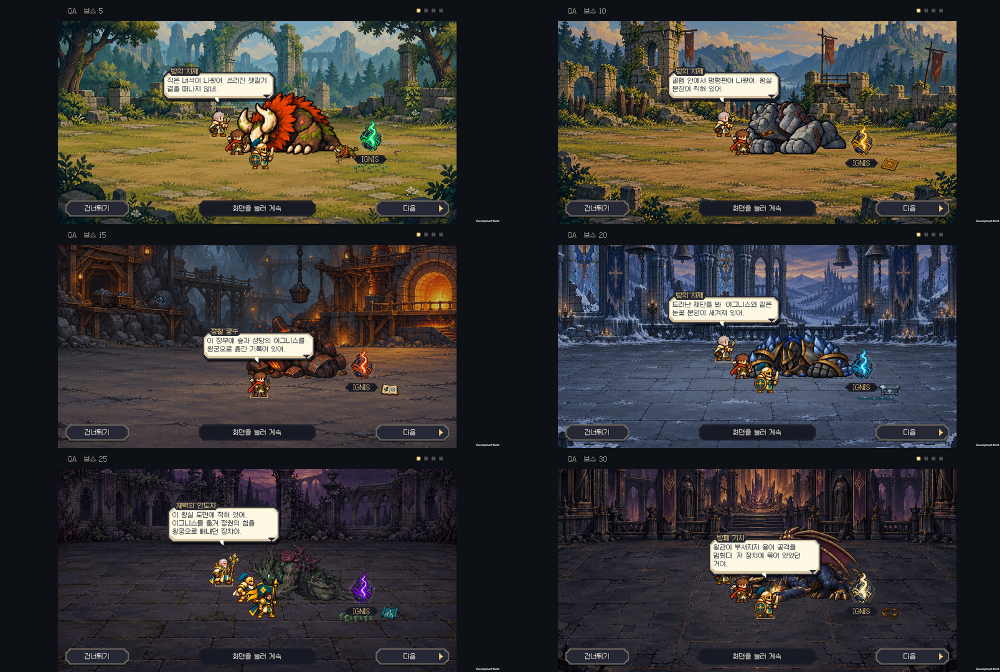
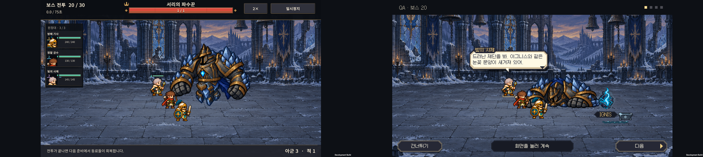
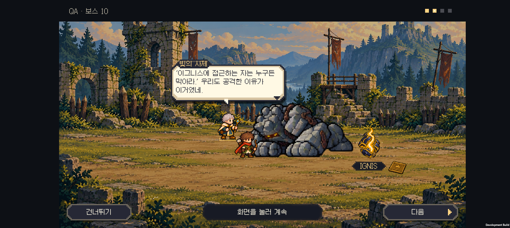
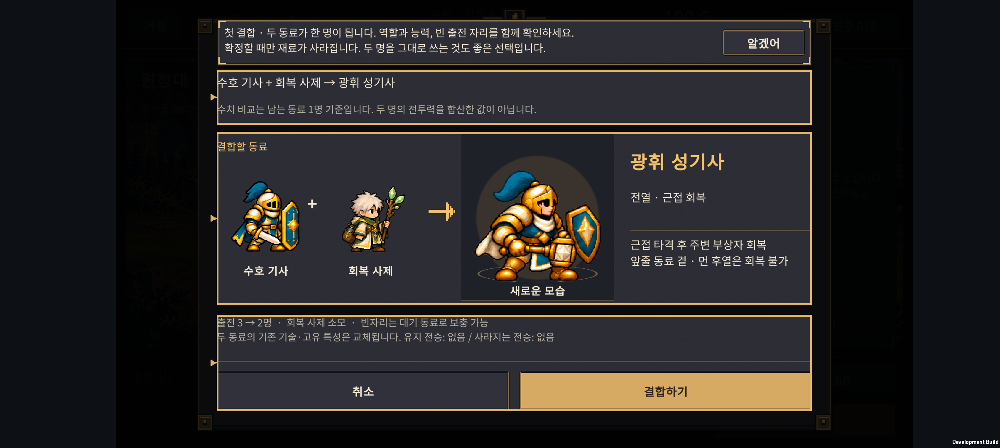
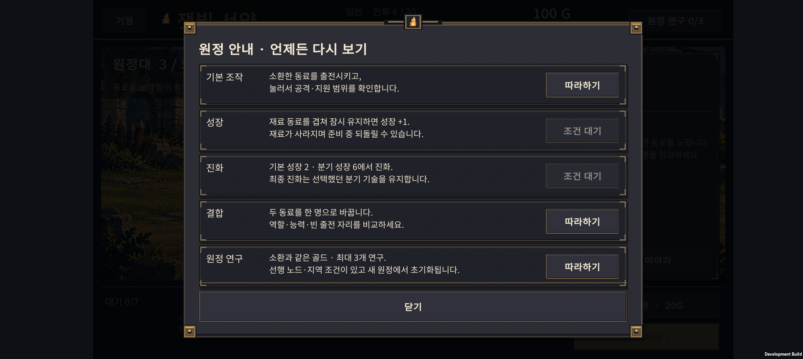

v0.66 · 처치 후 단서와 이해되는 대화
2026-11-01 · IGNIS: ASHEN OATH · 시즌1 스포일러 포함
보스와 싸우는 동안 명령판·장부 등의 이야기 소품을 미리 흩어 놓지 않는다. 보스가 쓰러져 진정한 뒤 이그니스와 작은 단서가 함께 드러나고, 동료들이 그것을 보고 말한다. 전투 규칙이나 보상량을 바꾸는 작업은 아니다.
처치 후 장면
| 전투 | 이그니스 곁에서 보이는 것 | 대화에서 이해할 사실 |
|---|---|---|
| 5 숲 | 기존 새끼와 새싹 장면 유지 | 잿갈기가 무엇을 지키려 했는지 처음 의문을 품는다. |
| 10 성채 | 왕실 명령판 하나 | 골렘은 사람보다 이그니스를 지키라는 명령을 받았다. 뒷면의 폐광 보관소 이름을 따라간다. |
| 15 폐광 | 반출 장부 하나 | 여러 지역의 핵이 왕궁으로 옮겨졌고, 이후 황폐화 보고가 남았다. 아직 인과관계는 단정하지 않는다. |
| 20 성당 | 작은 눈꽃 제단 | 왕국보다 오래된 기록으로 원래 소유권을 확인한다. 성당의 핵은 남겨 둔다. |
| 25 정원 | 왕실 추출 장치 도면 | 옛 왕실의 약탈과 수호자들의 탈환을 연결한다. 정원의 핵도 남기고 강제 추출을 멈추러 간다. |
| 30 왕궁 | 부서진 구속 왕관 | 용도 장치에 묶여 있었다. 핵을 반환하되 왕국 사람들의 난방과 결계도 지켜야 한다. |
- 단서는 쓰러진 보스 위치에서 정한 이그니스 곁에 놓인다. 전장 한쪽의 고정 위치에 미리 진열하지 않는다.
- 이그니스가 드러날 때 작은 단서도 함께 나타난다. 다음 대사를 눌러야 갑자기 생기던 방식을 없앴다.
- 물건을 보상 아이콘처럼 튀어 오르게 하지 않는다. 제단은 바닥에서 드러나고, 장부·명령판 등은 바닥에 놓인 소품으로 보인다.
- 화면 가장자리와 이그니스 이름, 하단 조작 영역을 피한다. 기존 도트 자산과 지역별 이그니스 색을 유지한다.
- 모션 줄이기에서는 완성된 장면을 바로 보여준다. 승리 보상은 대화 전에 한 번 정산되며, 스킵이나 재시작이 보상을 중복 지급하지 않는다.
대사 검토와 수정
기존 대사의 문제는 무엇을 보고 그런 결론을 내렸는지 연결이 약한 것이었다. 시적인 결론을 먼저 말하거나 화면에 없는 소품을 언급하면, 플레이어가 기록을 따로 읽어야 이해할 수 있었다.
여섯 장면의 24줄을 발견 → 의문/해석 → 다음 행동으로 다시 썼다. 반전은 15전투에서 의심하고, 20전투에서 원래 소유권을 확인하며, 25전투에서 전체 관계를 설명한다. 왕국 시민까지 악인으로 취급하지 않고 난방·결계라는 현실적인 갈등을 남긴다.
예를 들어 성채에서는 이렇게 말한다.
“골렘 안에서 명령판이 나왔어. 왕실 문장이 찍혀 있어.”
“‘이그니스에 접근하는 자는 누구든 막아라.’ 우리도 공격한 이유가 이거였네.”
“사람보다 이그니스를 먼저 지키라는 명령이군.”
“뒷면에 폐광의 보관소 이름이 있어. 그곳의 장부를 찾아보자.”
이야기 기록도 같은 결정을 따른다. 숲·성채·폐광의 세 핵은 회수, 성당·정원에서는 현지에 남김, 왕궁에서는 추출을 멈춘 뒤 먼저 회수한 핵의 반환을 시작한다. 이전 기록의 ‘성당의 핵을 챙긴다’와 새 대사의 모순을 수정했다.
첫 결합 안내
첫 성장·진화·연구 안내는 이미 있었다. 이번에는 결합 가능한 실제 재료가 생겼을 때 첫 결합 안내를 추가했다.
- 강조된 ‘결합 가능’ 버튼으로 결과를 열고, 확정 전에 모습·능력·빈 출전 자리를 확인한다.
- ‘두 명이 한 명으로 줄어든다’, ‘두 명을 그대로 쓰는 것도 좋은 선택이다’를 명시한다. 결합을 강제하거나 무조건 이득이라고 설명하지 않는다.
- 미리보기·안내 확인·건너뛰기는 골드나 유닛을 소비하지 않는다. 기존 확정과 준비 중 되돌리기를 유지한다.
- ‘조작 안내’에서 다시 볼 수 있다. 안내를 본 상태는 별도 선택 필드로 저장하여 기존 세 항목 비트와 이전 저장 데이터를 유지한다.
- 연구 안내의 조사 오류를 고치고 비용·지역 해금 조건·이번 원정에서만 유지됨을 알린다.
정상 원정 진행 비교
현재 normal-052 규칙으로 144개 새 원정, 실제 진행 전투 3,241회를 자동 실행했다. 체력·골드 보정 없이 소환·성장·진화·결합·연구 API를 사용하고 남은 기회를 소모하면 종료한다. 전투 내부 계산은 실제와 같은 1/60초 틱이다.
- 구성: 시작 편성 4종 × 최종 진화/H-04/H-05 운용 3종 × 연구 경로 3종 × 시드 4개(66501–66504).
- 완주: 31/144(21.5%). 고정 정책의 결과이며 일반 플레이어의 완주율·소요 시간 추정치가 아니다.
- 별도 6,259회는 같은 편성으로 인접 전투를 비교한 격리 전투다. 정상 진행 전투 수나 완주 수에 더하지 않는다.
- 이 정책은 연구를 11전투부터 구입하며, 모든 합리적인 플레이·배치·소비 순서를 대표하지 않는다. 각 전투 수치는 그 전투에 도달한 원정의 첫 시도 기준이다. 재도전 성공은 전체 완주에 포함된다.
| 우선 확인할 전투 | 도달한 원정의 첫 시도 승리 | 관찰 |
|---|---|---|
| 15 | 72/125 · 57.6% | 시간 초과 33건. 피해를 못 버티는 경우와 화력이 모자라는 경우를 나눠 조정해야 한다. |
| 18 | 68/95 · 71.6% | 시종 집중 공격 구간의 생존 압박. 시간 초과는 없었다. |
| 19 | 50/80 · 62.5% | 보호막 지원이 더해지며 추가 실패. 역시 시간 초과는 없었다. |
| 25 | 45/64 · 70.3% | 후열 분산과 중독 대응을 확인할 구간. |
| 29 | 26/46 · 56.5% | 최종 보스 직전 일반전이 큰 장벽이다. |
| 30 | 29/36 · 80.6% | 여기까지 도달한 편성만의 조건부 수치. 이것만으로 마지막 보스가 쉽다고 단정할 수 없다. |
첫 두 전투는 안내 구간이며, 지역 첫 전투에는 숨을 돌릴 여유가 있다. 모든 전투를 똑같이 어렵게 만들기보다 위 구간과 소비·편성 선택의 관계를 먼저 확인한다. 이번 변경에서 난이도 수치는 조정하지 않았다.
재현: tests/DifficultyCurve/run.ps1 -FirstSeed 66501 -Count 4 -ReportPath '.local-tools/v066/normal-flow.json'
검증과 다음 순서
- 코어 이야기 62개, 학습·결과 처리 5,744개, 계정 저장 150개 검사 통과.
- Unity: 새 단서 배치·결합 안내·저장 호환 143개, 기존 학습 UI 20개, 대화 609개, 엔딩 214개 검사 통과. Android 빌드 성공.
- Galaxy Buddy2: 6종 × 기본/모션·섬광 줄이기 12개 장면 통과, 84장과 검수 영상 확보. 성채·성당·왕궁은 2×, 나머지는 1×로 확인했다. 이 장면 검수는 보스 체력 1인 별도 전투이며 위 정상 원정 밸런스 표본과 섞지 않는다.
- 휴대폰에서 첫 결합 안내의 두 번째 줄 잘림과 ‘알겠어’를 가로채던 뒤쪽 상세 버튼을 발견해 수정했다. 최종 APK에서 안내 확인 → 상세 능력 → 취소 → 안내 메뉴 → 연구 다시 보기를 실제 터치하고, 원정 데이터가 그대로이며 재시작 뒤 안내 확인 상태가 유지되는 것을 대조했다.
- 최종 APK에서 정원 대화의 다음/스킵을 실제 터치해 다시 확인했다. 이야기 12장면 캡처 후 마지막 변경은 안내창 여백과 버튼 처리뿐이다.
- 테스트 전의 원정 저장과 설정을 바이트 단위로 복원·검증했다. 전체 84장 원본은 로컬 검수 폴더에 보관하고, 아래에는 대표 화면을 수록했다. HTML은 소스·링크만 확인했으며 브라우저 렌더링은 검증하지 않았다.
- 기기 사례 · 검증 로그 · APK 정보 · 보스 장면 영상
- 다음 난이도 작업은 15전투의 시간 초과와 18~19전투의 생존을 나눠 비교한다. 무조건 체력이나 적 수를 올리는 방식은 피한다.
- 다음 아트 후보는 성채의 기본 공격 전용 한팔 자세와 후반 기술 사이 연결 프레임이다. 이번에는 소품 이미지를 새로 생성하지 않았다.
실기기 대표 화면
왼쪽부터 숲·성채 / 폐광·성당 / 정원·왕궁. 전체 대본은 위 링크에서 읽을 수 있다.

성당 전투 중에는 이야기 소품이 없고, 파수꾼이 쓰러진 뒤 이그니스와 작은 제단이 함께 나타난다.



